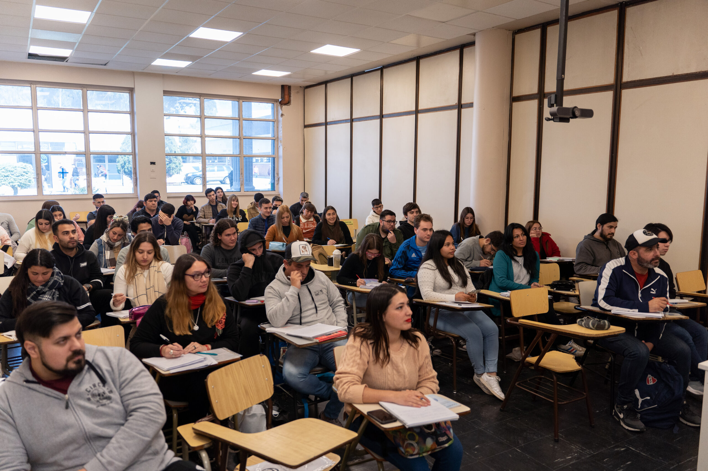

Técnico en Informática
Institución: Universidad de la Matanza
Competencias adquiridas:
- Mantenimiento y reparación de computadoras
- Programación básica
- Redes informáticas
- Soporte técnico
Fecha: 2018 - 2021
Imágenes de la institución


Volver al indice